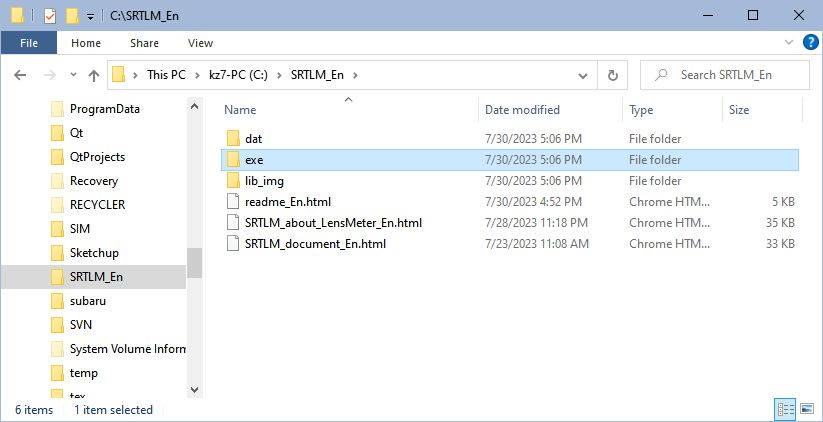
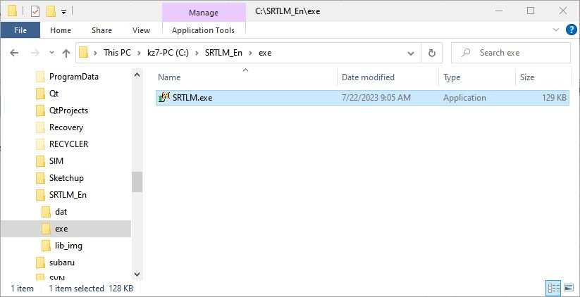
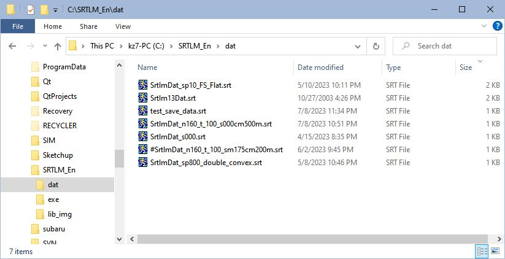

SRTLM Lens meter Simulation Tool
Installation
-
After unzipped SRTLM_En.zip, the [SRTLM_En] folder will appear.

-
Start SRTLM
Run [SRTLM_En] - [exe] - SRTLM.exe.

-
See SRTLM Document for the explanation of SRTLM.
If you want to know about the lens meter, please read About Lens meter .
-
Notes
You can move the [SRTM_En] folder anywhere. However, SRTLM uses the [dat] folder for saving and reading data. Even if you move the [SRTM_En] folder, do not delete the [dat] folder.

Uninstallation
-
Delete the [SRTLM_En] folder. that's all.
-
This simulation tool does not manipulate the registry.
Acknowledgments
-
Mr. Masakazu Irie taught me a lot about c++. I would like to take this opportunity to express my deep gratitude.
Reference
-
D. P. Feder: "Tracing of Skew Rays", RP2113 Vol. 45, July 1950.
-
Tuneo Katayama: [Geometrical optics] Kika kougaku (in Japanese), Nihon Eyeglass Technical School，1984.
-
Toru Kusakawa: [Lens Optics] Renzu kougaku (in Japanese), Tokai University Publishing Division，1989; P81-217
-
Yoshiya Matui et al.: [Geometrical optics] Kika kougaku (in Japanese), Kyoritsu Publishing，1979; P125-160
-
Yoshiya Matui: [Lens design method] Renzu sekkei hou (in Japanese), Kyoritsu Publishing，1973.
Supplement
If you notice any bugs or problems while using SRTLM, please let me know below.
Also, if you wish to reprint, please contact me.